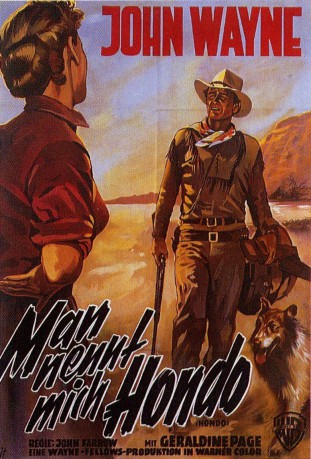
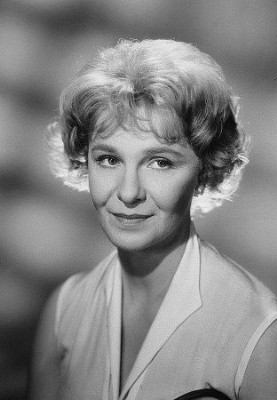
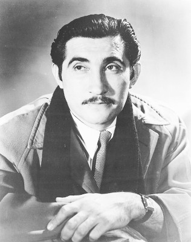
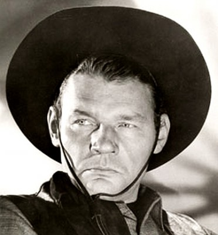

#1494 Man nennt mich Hondo
Alternativ: Hondo
Auszeichnungen: für 2 Oscars nominiert
 
 IMDB-Wertung: 7.1 / 10
IMDB-Wertung: 7.1 / 10  Metascore: 0
Metascore: 0 
Ein Kurierreiter lernt auf dem Gebiet der Indianer Angie mit ihrem Sohn kennen. Kurz darauf muß er ihren nichtsnutzigen Ehemann erschießen. Da die Armee einen Vertrag mit den Indianern nicht einhält wird er von den Apachen gefangen genommen. Doch Angie rettet ihn, indem sie den Indianern gegenüber behauptet, dass er ihr Mann sei.
Jahr: 1953
Dauer: 83 Minuten
FSK: 12
Land: USA Studio: Warner Bros.Tonspuren: DD5.1 - ,
Untertitel: Deutsch, Englisch,
Auflösung: 1080p (1920x1080) Größe: 5601 MB
Genre: Drama, Krieg, Western, Liebe
Regisseur: John Farrow
Drehbuch: James Edward Grant, Louis L'Amour
Soundtrack: Hugo Friedhofer, Emil Newman
Darsteller:
 John Wayne als Hondo Lane
John Wayne als Hondo Lane-  Geraldine Page als Angie Lowe
 Ward Bond als Buffalo Baker
Ward Bond als Buffalo Baker Michael Pate als Vittorio - Chiricahua Apache Chief
Michael Pate als Vittorio - Chiricahua Apache Chief- James Arness als Lennie - Army Indian Scout
- Lee Aaker als Johnny Lowe
 Paul Fix als Maj. Sherry
Paul Fix als Maj. Sherry-  Rodolfo Acosta als Silva
-  Leo Gordon als Ed Lowe
- Tom Irish als Lt. McKay
- Rayford Barnes als Pete - Card Player in Saloon
- Morry Ogden als Horse Rider - Opening Scene , uncredited
 Chuck Roberson als Otawanga / Cavalry Sergeant Killed in Indian Attack , uncredited
Chuck Roberson als Otawanga / Cavalry Sergeant Killed in Indian Attack , uncredited- Sam als Hondo's dog , uncredited
Datei: X:\HD-Western-Collections\John Wayne\Man nennt mich Hondo (1953, FSK12, 1920x1080).mkv seit 11.07.2015
Festplatte: HD Eastern+Western
 Es gibt insgesamt 34 Filme in der Gruppe 'HD-Western-Collections\John Wayne'
Es gibt insgesamt 34 Filme in der Gruppe 'HD-Western-Collections\John Wayne'